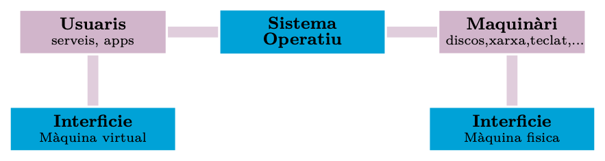
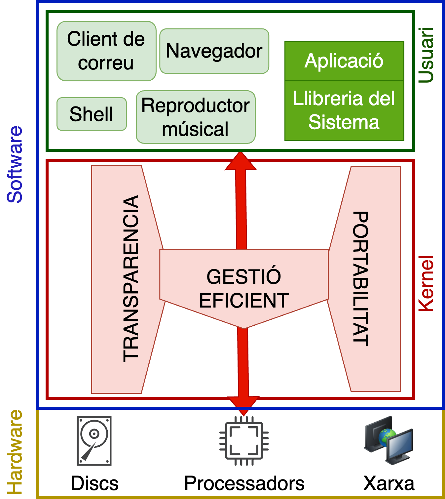
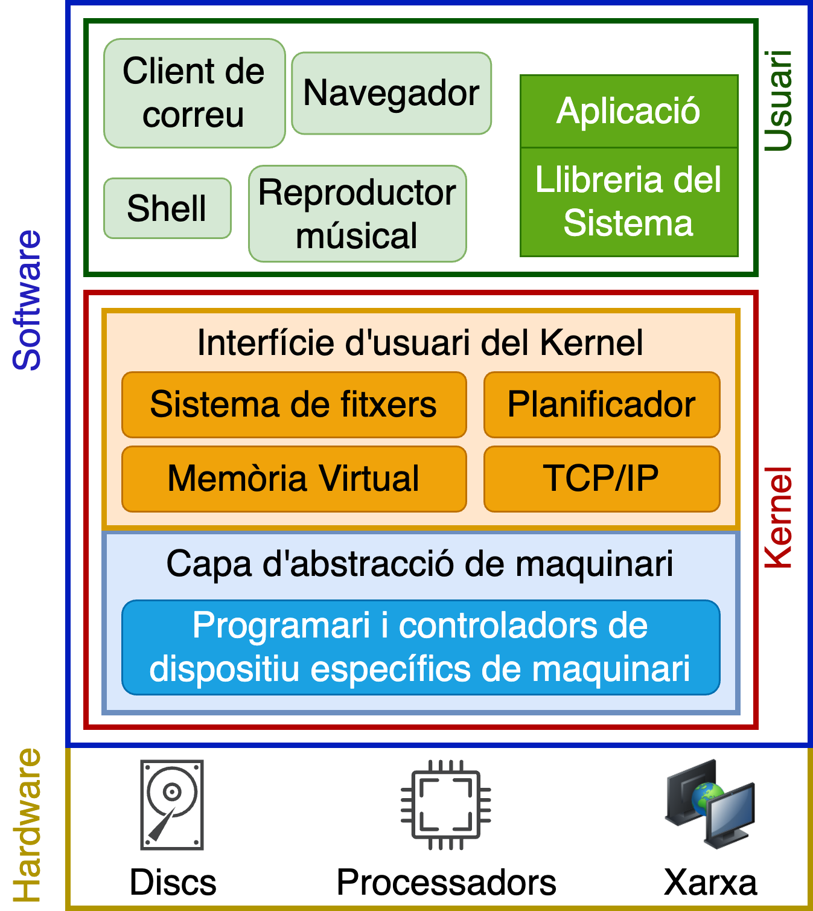
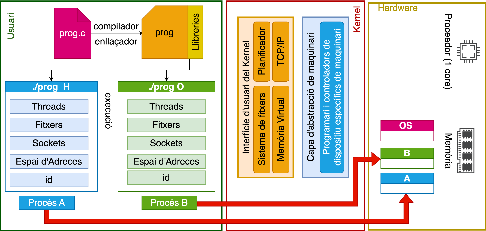
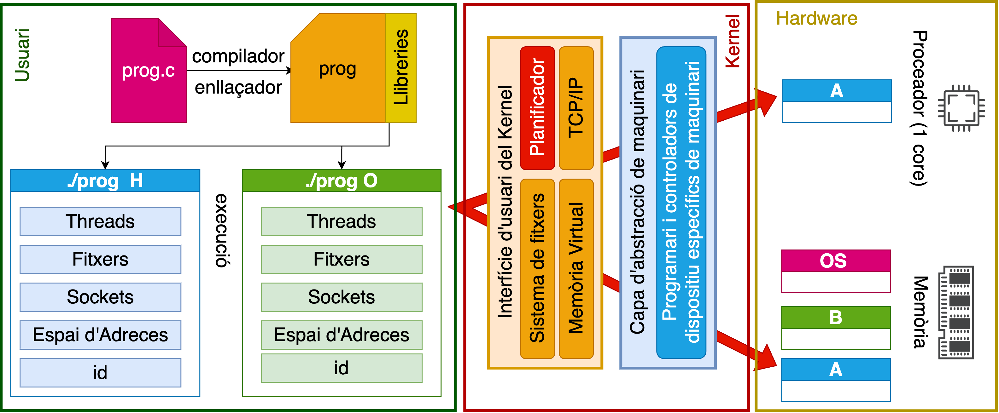
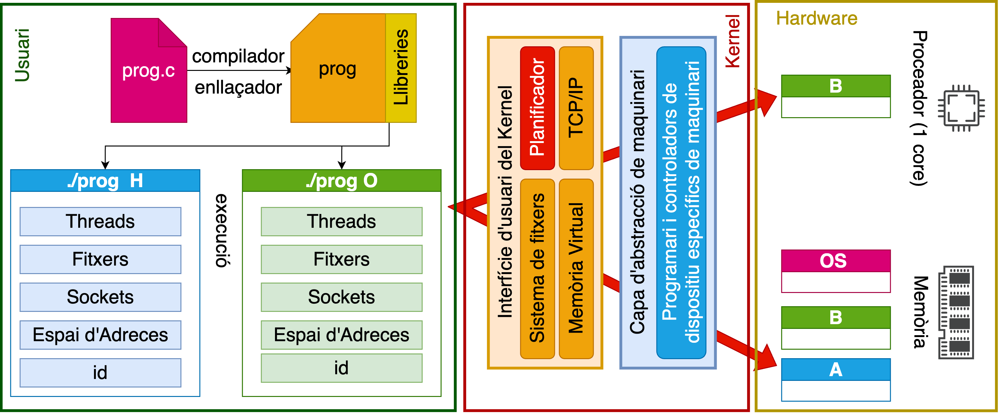
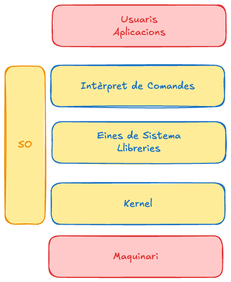

Bloc 1 · Desenvolupament de Programari en Espai d’Usuari
Cotxe, rellotge, portàtil, rentadora, nevera, televisió… tots són sistemes informàtics.
Tot arreu es parla de IoT, BigData, Cloud, AI, Blockchain…
El món esta interconnectat per xarxes i informació que es genera i es processa constantment.
Vivim envoltats de sistemes paral·lels i distribuïts.
Cada peça de hardware és diferent, per tant la complexitat per gestionar els recursos és molt elevada.
… entre moltes altres …
Suposem que un programa pot llegir i escriure qualsevol posició de la memòria RAM.
Què podria passar?
Sense protecció de memòria, els processos no estarien aïllats.
Qui hauria d’impedir que un procés accedís a la memòria d’un altre?
El sistema operatiu, amb l’ajuda del hardware, proporciona mecanismes de protecció i aïllament de la memòria.
És un bucle infinit: el procés no acaba per si mateix. En un sistema amb preempció, el scheduler pot interrompre temporalment el procés i donar CPU a altres processos. El procés, però, continua consumint recursos mentre segueixi executant-se.
Què passaria si no existís el scheduler o si no pogués interrompre el procés?
Cada iteració crea nous processos. Aquests processos també continuen executant el bucle i poden crear nous processos, fent que el nombre de processos creixi molt ràpidament. Cosa que pot saturar el sistema i fer-lo inutilitzable. Aquest tipus de programa es coneix com a fork bomb.
Un sistema operatiu (SO) és el software que gestiona els recursos del sistema, proporciona abstraccions del hardware i ofereix un entorn segur per executar programes.

Un procés és la màquina virtual que el sistema operatiu ofereix a un programa en execució: una instància activa amb els seus propis recursos.
Codi · Dades · Pila (stack) · Heap · Registres · Espai d’adreces · Estat gestionat pel SO (PID, prioritat, fitxers oberts…)
Dos processos que executen el mateix programa són, tot i així, dos processos diferents: cadascun amb el seu propi espai d’adreces i estat.
El sistema operatiu utilitza dos nivells de privilegi del processador, mode kernel i mode usuari, per protegir l’estat crític del sistema i per evitar que un procés alteri el funcionament d’altres processos o del propi sistema operatiu.
Els programes en mode usuari no poden accedir directament als recursos del hardware. Demanen els serveis al sistema operatiu mitjançant una crida de sistema.
printf() \(\Rightarrow\) libc \(\Rightarrow\) write() \(\Rightarrow\) system call \(\Rightarrow\) kernel \(\Rightarrow\) driver \(\Rightarrow\) dispositiu
El programa no accedeix directament al dispositiu de sortida, sinó que crida a la funció printf() de la biblioteca estàndard de C (libc). Aquesta funció, al seu torn, crida a la funció write() del sistema operatiu, que és una crida de sistema (system call). El sistema operatiu, en mode kernel, accedeix al dispositiu de sortida i escriu el missatge. per simplificar, ignorem aquí el buffering intern de la llibreria stdio.



Cada execució del mateix programa genera un procés diferent, amb el seu propi identificador (PID) i espai de memòria.

El scheduler assigna el processador a un procés durant un temps determinat i el va intercanviant (canvi de context): cada procés creu tenir tots els recursos per a ell sol.

Si un procés intenta accedir a una adreça que no té autoritzada, el hardware detecta la violació i el sistema operatiu pot finalitzar el procés. Habitualment, el procés rep un senyal de violació de segmentació (segmentation fault).
Segons la prioritat dels processos A i B, un pot tenir més temps de CPU que l’altre.
./prog H & ./prog OQuins ordres de sortida són possibles?
H H H …
H O H …
O O H …
Qualsevol intercalació és possible: depèn del planificador.
./prog & ; ./prog OFixeu-vos bé: el primer ./prog s’executa sense argument.
Què passarà?
./prog sense argument: argv[1] és NULL. Passar NULL a printf("%s", ...) és comportament indefinit en C — la sortida depèn de la implementació de la llibreria.
Comprovem-ho a la nostra màquina de referència. Quina és la sortida real?
./prog1 & ./prog1Els dos processos mostren la mateixa adreça — però no interfereixen entre ells. Cada procés té el seu propi espai d’adreces virtuals. La MMU, mitjançant les estructures de traducció configurades pel sistema operatiu, tradueix les adreces virtuals a adreces físiques.
Abstrau el maquinari: ofereix una interfície simple i amaga la complexitat tècnica.
Aïlla i protegeix: reparteix els recursos i evita que uns programes en perjudiquin d’altres.
Comparteix: proporciona serveis comuns reutilitzables per a tot el sistema.
SO = Il·lusionista + Àrbitre + Pega

És la visió que té l’usuari del sistema operatiu durant una sessió de treball.
El SO divideix el programari amb tots els privilegis (kernel) del programari amb accés limitat (programes, llibreries, intèrpret de comandes…).
Aquesta dualitat és exactament la frontera user space / kernel space que vam veure abans.
La virtualització presenta una visió abstracta dels recursos del sistema: diversos processos creuen que disposen sempre d’un conjunt exclusiu de recursos.
Cada procés té la il·lusió de disposar d’accés exclusiu a tot l’espai d’adreces de memòria del processador.
La MMU (unitat de gestió de memòria) tradueix les adreces virtuals que utilitza el programa en adreces físiques reals.
Ho hem vist ja amb ./prog1 & ./prog1: dues adreces virtuals idèntiques, dues ubicacions físiques diferents.
Ofereix una interfície simple i fàcil d’utilitzar per als recursos físics, ocultant la complexitat tècnica.
Per imprimir un document no cal conèixer la interfície de comunicació, els controladors ni els protocols de la impressora: n’hi ha prou amb una funció (imprimir).
Permet que una aplicació tingui ús exclusiu d’un recurs quan cal, i alhora manté la il·lusió que els recursos són il·limitats.
Un programa de videoconferència pot usar la càmera i el micròfon amb la garantia que cap altre programa hi accedirà alhora.
Podeu tenir moltes aplicacions obertes a la vegada, encara que només una estigui en primer pla: cada procés creu ser propietari exclusiu dels recursos.
Distribueix els recursos disponibles entre usuaris i aplicacions de manera eficient i justa.
En un sistema amb múltiples usuaris, el temps de processador s’ha de repartir equitativament entre tots els qui executen aplicacions.
Garanteix la segregació i la protecció d’usuaris i aplicacions entre ells.
Impedeix que una aplicació bloquegi o afecti el funcionament d’altres aplicacions.
Proporciona un conjunt de serveis compartits i reutilitzables per diverses parts del sistema.
El sistema de fitxers proporciona una interfície estàndard per crear, llegir, escriure i eliminar fitxers de forma transparent (read, write, open, close…).
Sobre aquesta interfície es construeix la libc, amb funcions d’entrada/sortida d’alt nivell (fopen, fread, fwrite, fclose…).
Cap SO real optimitza tots aquests reptes alhora: cada disseny és un compromís diferent.
Un SO és Il·lusionista + Àrbitre + Pega:
Per a cadascuna determina: (a) quin dels tres papers ha fallat (Il·lusionista / Àrbitre / Pega), (b) una frase justificant per quin mecanisme dels vistos avui.
En un ordinador amb diversos usuaris connectats alhora, un usuari engega un programa i, a partir d’aquell moment, la resta d’usuaris no poden fer res: els seus programes queden congelats fins que l’usuari inicial acaba.
Un procés aconsegueix llegir, sense cap error ni avís, dades que pertanyen a la memòria d’un altre procés que s’executa al mateix ordinador.
Cada aplicació que es vol comunicar amb la impressora ha d’incloure el seu propi codi per parlar directament amb el controlador de la impressora, perquè el sistema no ofereix cap funció comuna per fer-ho.
Un procés intenta escriure en una zona de memòria que no li pertany. El sistema el finalitza immediatament amb un error.
Creeu una situació on un sistema operatiu no compleixi el paper d’Ilusionista. Explica quin mecanisme ha fallat i per què.
Imagineu un sistema operatiu que no distingeix entre mode kernel i mode usuari: tot el codi s’executa amb els mateixos privilegis. Quin dels tres papers (Il·lusionista, Àrbitre o Pega) deixaria de poder-se garantir de manera fiable? Justifiqueu la resposta amb el mecanisme concret que fallaria.